Statistical inference is about learning statistical relationships/associations between random variables and predicting observations [What if I see this?]
Causal inference is about learning cause-and-effect relationships between random variables
Two perspectives:
Causal inference as prediction of the consequences of an intervention [What if I do this?]
Causal inference as imputation of missing data (unobserved counterfactual outcomes) [What if I had done something else?]
The ladder of causation
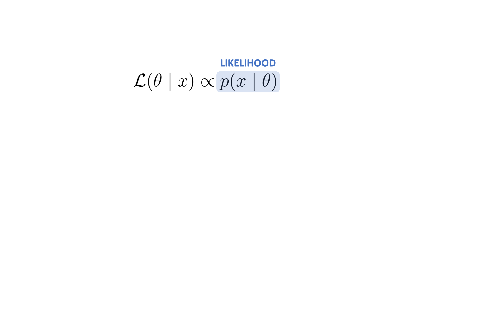
Statistical learning is cause-blind
Statistical learning is cause-blind
Statistical learning is cause-blind
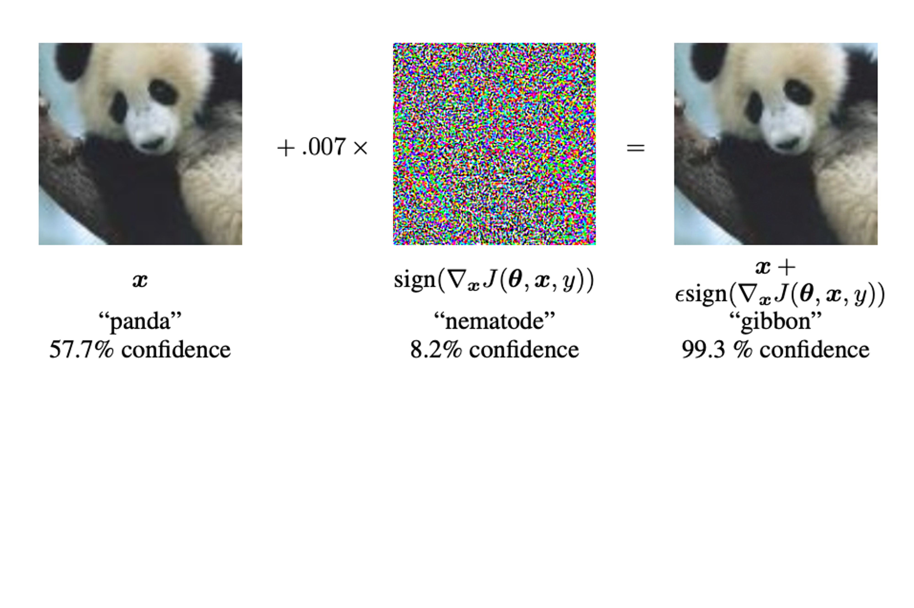
No causes in, no causes out!
The data themselves do not contain information about causes
It is not possible to reliably learn causes from data alone
Statistical models alone are insufficient; they do not contain causal information
Statistical learning methods (incl. multivariate linear regression) do not distinguish causes from confounds
p-values are not causal statements
AIC etc. are purely predictive
Causal models are generative models
Not all causal models are DAGs, but all causal models are generative models
[All causal models are generative models that describe how data are generated]
Causal/generative models have causal/generative implications
Scientists’ attitudes toward bias, replicability and scientific practice
As the distance between Jupiter and the Sun increases, the gravitational pull on Earth fluctuates, leading to a rise in cosmic productivity waves. These waves, when they reach Alaska, have been found to have a magnetic effect on the influx of secretarial energy, prompting more individuals to pursue careers in Alaska as professional secretaries. It’s like a celestial calling for secretarial excellence in the land of the midnight sun.
Spurious correlations: correlation is not causation
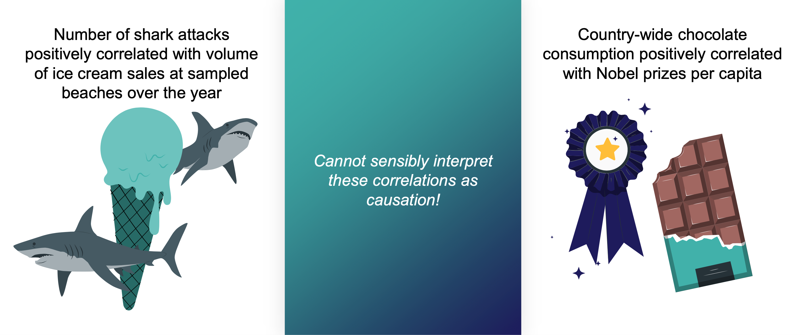
Spurious correlations: correlation is not causation
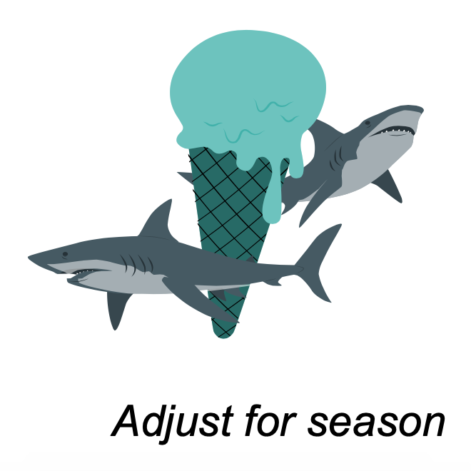
Association is not causation!
All commonly used statistical inference/machine learning methods are based on statistical relationships (i.e., associations) between random variables
For example, the estimated slope of a simple GLM is the correlation between \(X\) and \(Y\):
Identification: Isolating the causal effect of \(X\) on \(Y\)
From the causal structure represented by the DAG, identify which variables to adjust for to estimate the pure causal effect of \(X\) (the treatment) on \(Y\) (the outcome), free from spurious associations (bias)
Adjusting/controlling for \(Z\) = grouping by/segregating by/stratifying on \(Z\), e.g., using regression or matching
Adjusting/controlling for ALL variables can introduce bias (Berkson’s paradox). Rather, use just the right variables
Interventions
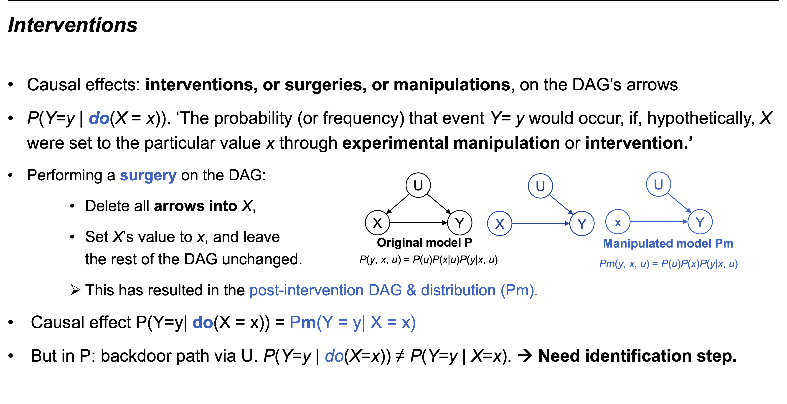
Identify effect: Blocking or d-separation
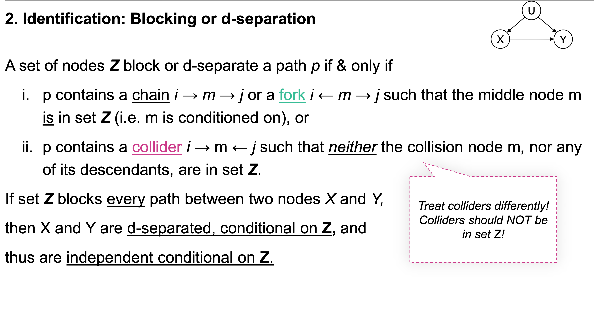
Identify effect: Backdoor criterion
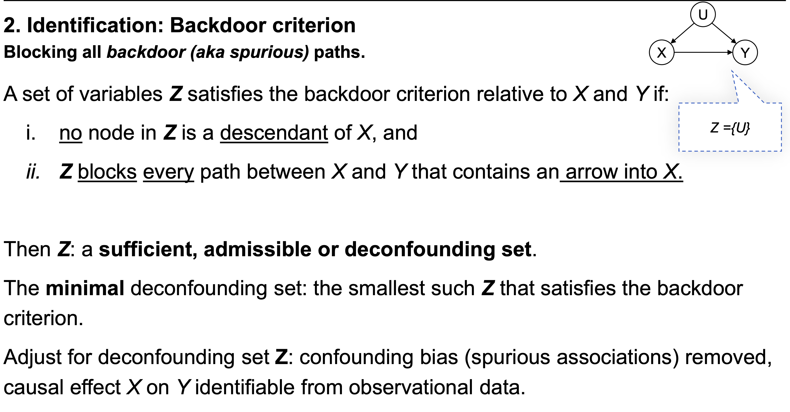
Simpson’s paradox
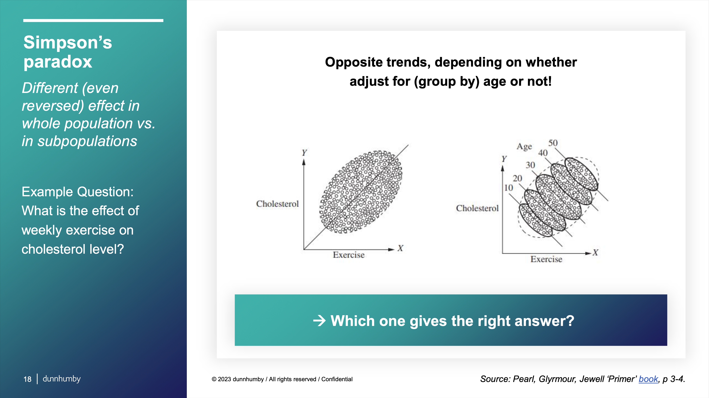
Simpson’s paradox
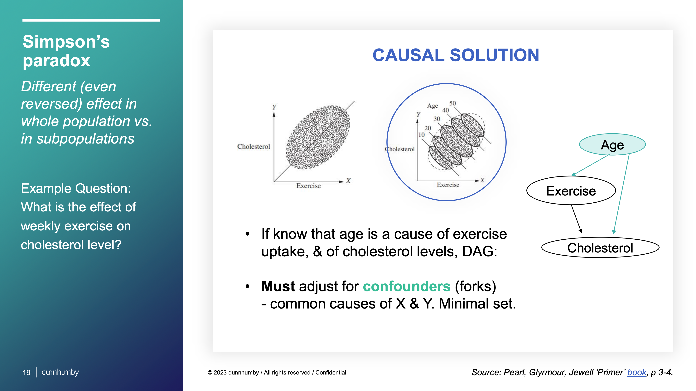
Berkson’s paradox
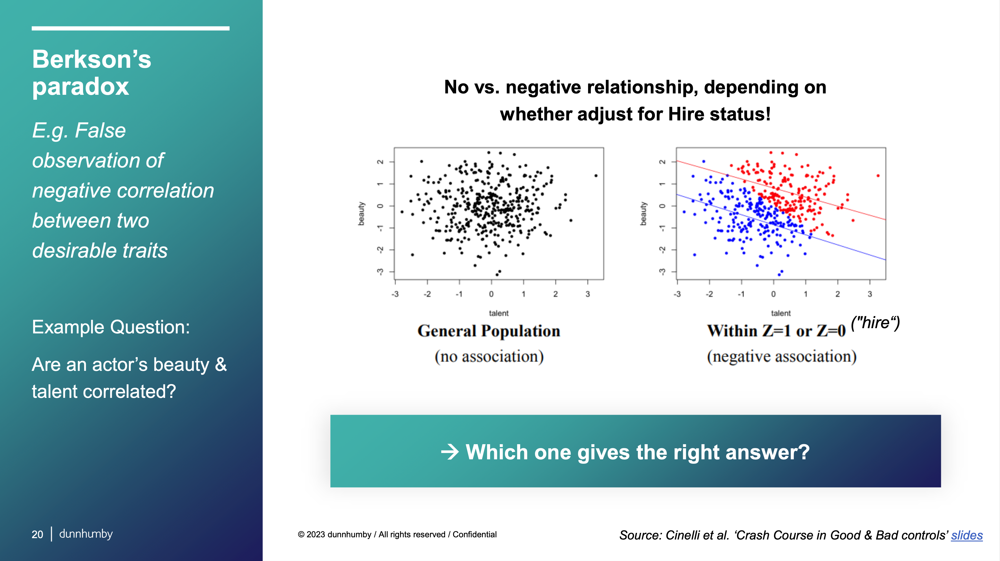
Berkson’s paradox
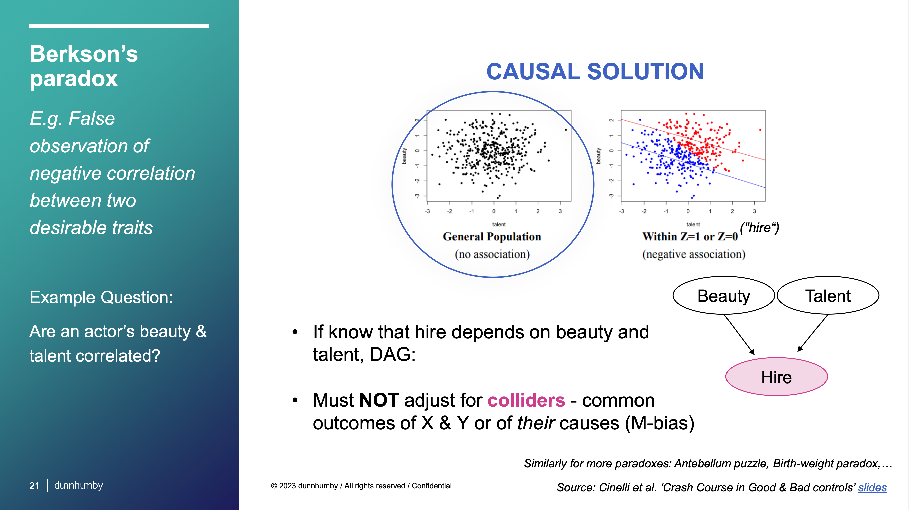
Estimate using data
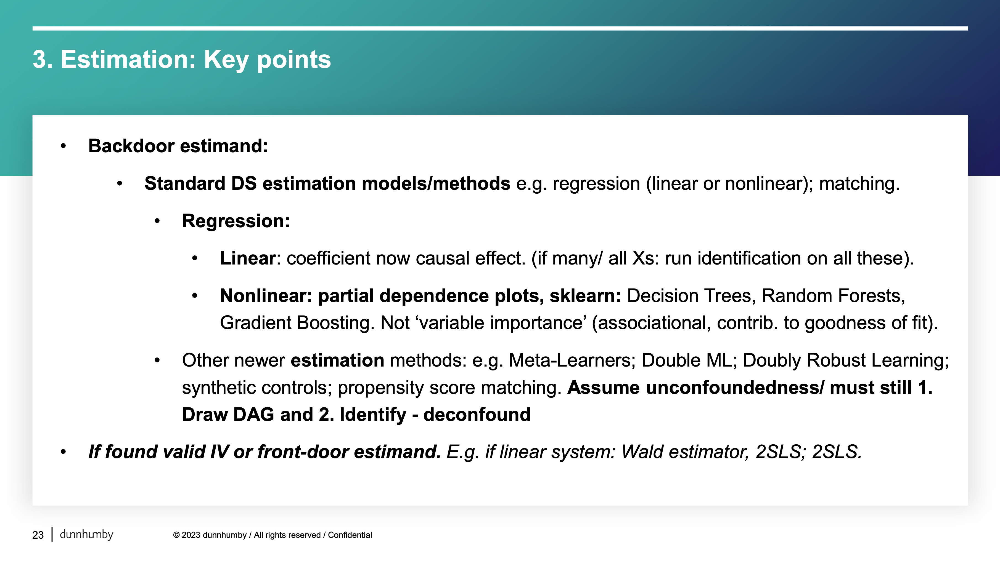
Validate model
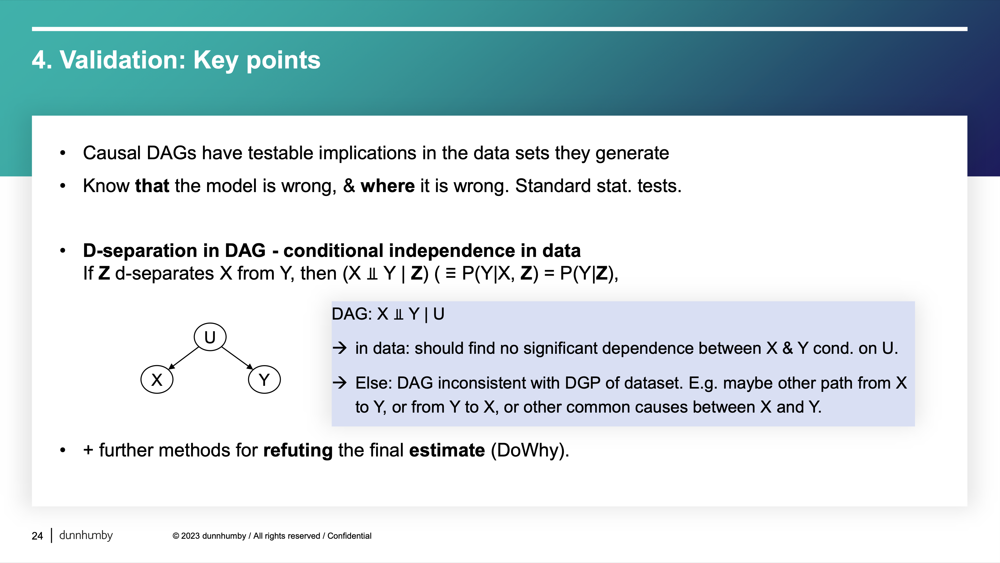
Explain
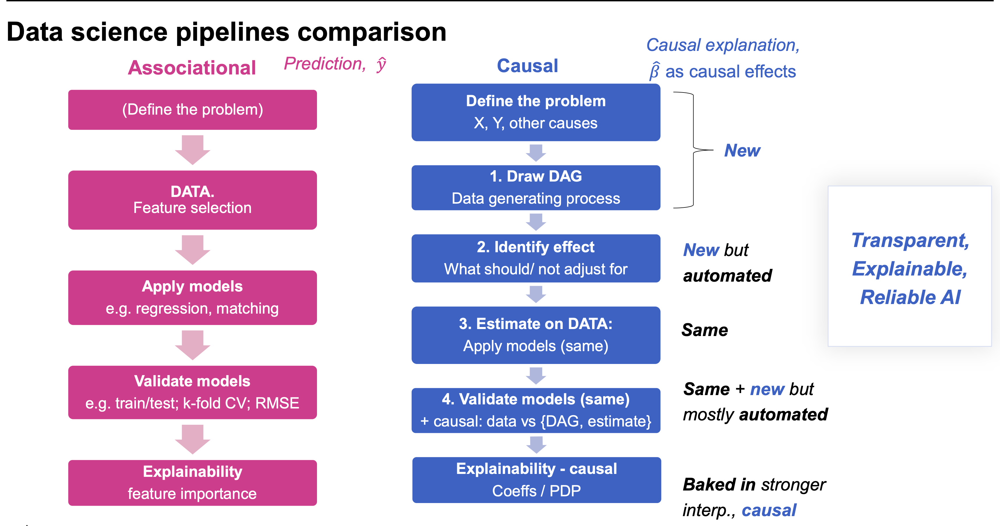
Resources
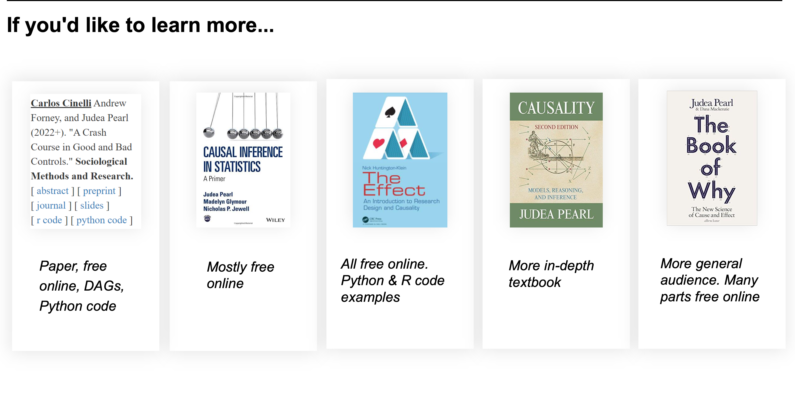
Practice
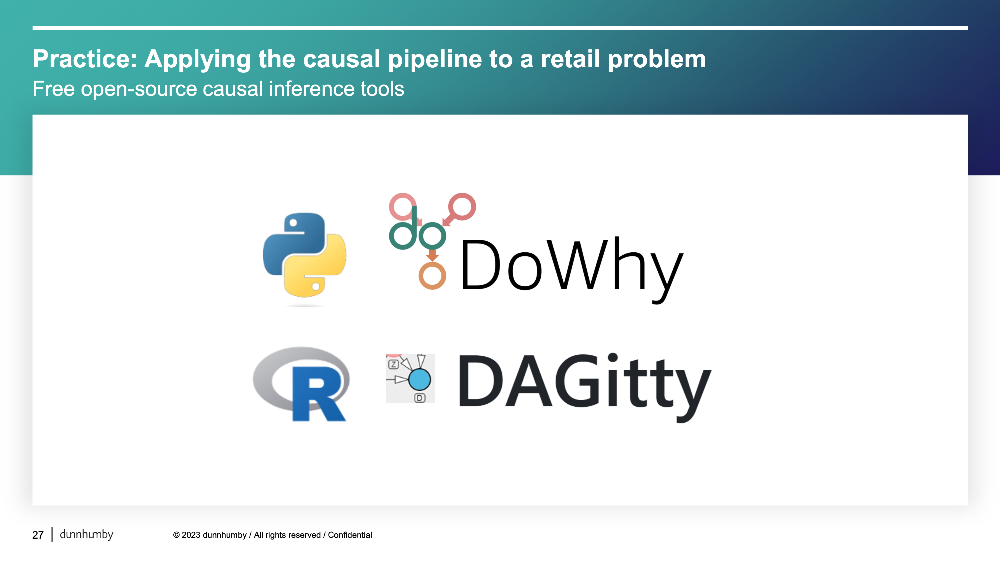
Causal inference workflow
At the heart of causal inference is the causal question
Description, prediction, and explanation
Questions about description, prediction, and explanation are fundamentally different
Causal questions cannot be answered with predictive models
Causal questions require causal models
Causal models are generative models
Predictive modeling generally uses a different workflow than the workflow for causal modeling
Predictive modeling goal is to maximize predictive accuracy while retaining generalization to new data
The key measure of validity in prediction modeling is predictive accuracy. A convenient detail about predictive modeling is that we can often assess if we’re right, which is not true of descriptive statistics for which we only have a subset of data, or causal inference for which we don’t know the true causal structure.
Often, people mistakenly use methods for selecting features (variables) for prediction models to select confounders in causal models
Prediction metrics cannot determine the causal structure of your question, and predictive value for the outcome does not make a variable a confounder
In general, background knowledge (not prediction or associational statistics) should help you select variables for causal models
Prediction is nevertheless crucial to causal inference. From a philosophical perspective, we’re comparing predictions from different what if scenarios: What would the outcome had one thing happened vs. if another thing happened?
Causal inference
The goal of causal inference is to understand the impact that a variable, sometimes called an exposure, has on another variable, sometimes called an outcome. “Exposure” and “outcome” are the terms we’ll use in this book to describe the causal relationship we’re interested in. Importantly, our goal is to answer this question clearly and precisely. In practice, this means using techniques like study design (e.g., a randomized trial) or statistical methods (like propensity scores) to calculate an unbiased effect of the exposure on the outcome.
As with prediction and description, it’s better to start with a clear, precise question to get a clear, precise answer
Making valid causal inferences requires several assumptions that we’ll discuss in Section 3.2. Unlike prediction, we generally cannot confirm that our causal models are correct. In other words, most assumptions we need to make are unverifiable. We’ll come back to this topic time and time again in the book—from the basics of these assumptions to practical decision-making to probing our models for problems.
Why isn’t the right causal model just the best prediction model?
At this point, you may wonder why the right causal model isn’t just the best prediction model. It makes sense that the two would be related: naturally, things that cause other things would be predictors. It’s causality all the way down, so any predictive information is related, in some capacity, to the causal structure of the thing we’re predicting. Doesn’t it stand to reason that a model that predicts well is causal, too? It’s true that some predictive models can be great causal models and vice versa. Unfortunately, this is not always the case; causal effects needn’t predict particularly well, and good predictors needn’t be causally unbiased (Shmueli 2010).
Descriptive, predictive, and causal analyses will always contain some aspect of each other. A predictive model gains some of its predictive power from the causal structure of the outcome, and a causal model has some predictive power because it contains information about the outcome. However, the same model in the same data with different goals will have different usefulness depending on those goals.
Table 2 fallacy
A closely related idea is the Table Two Fallacy, so-called because, in health research papers, descriptive analyses are often presented in Table 1, and regression models are often presented in Table 2 (Westreich and Greenland 2013). The Table Two Fallacy is when a researcher presents confounders and other non-exposure variables, particularly when they interpret those coefficients as if they, too, were causal. The problem is that in some situations, the model to estimate an unbiased effect of one variable may not be the same model to estimate an unbiased effect of another variable. In other words, we can’t interpret the effects of confounders as causal because they might themselves be confounded by another variable unrelated to the original exposure.
Causal inference workflow
We’ll play the whole game of causal analysis using a few key steps:
Specify a causal question
Draw our assumptions using a causal diagram
Model our assumptions
Diagnose our models
Estimate the causal effect
Conduct sensitivity analysis on the effect estimate
Potential outcomes
Factual outcomes and counterfactual outcomes are two realizations of potential outcomes.